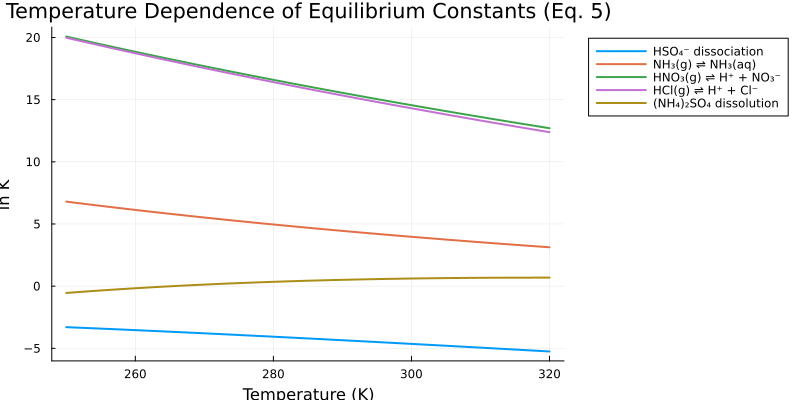
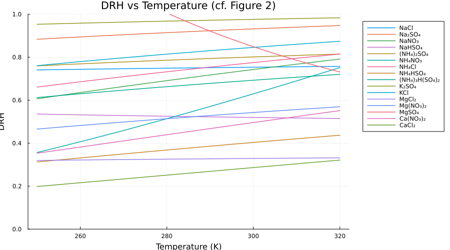
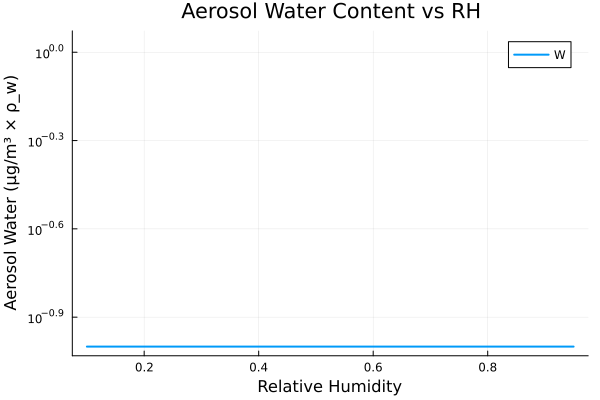
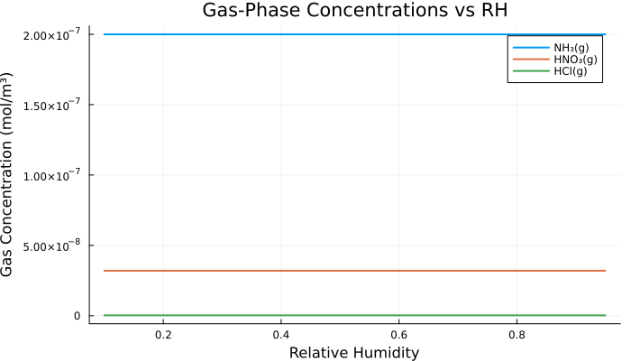
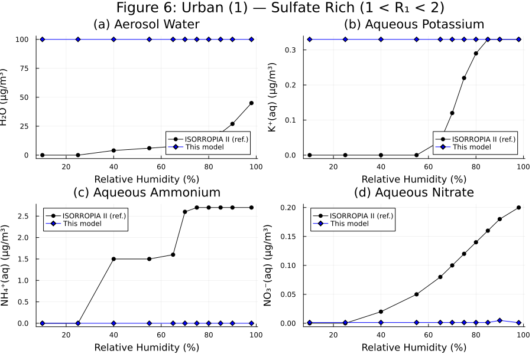
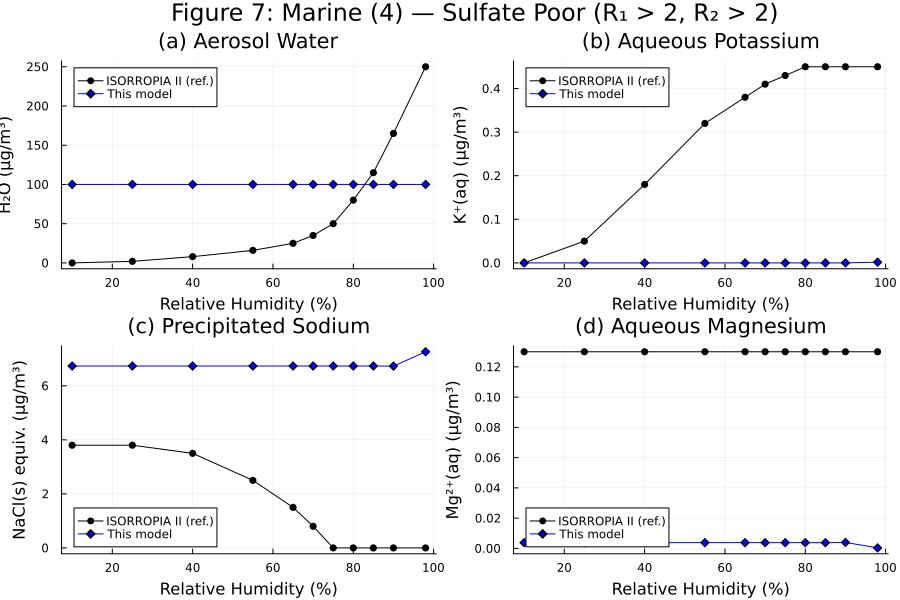
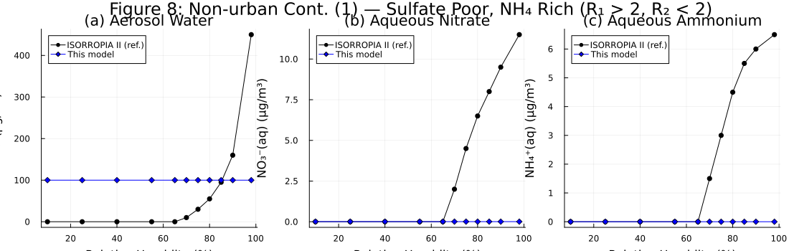
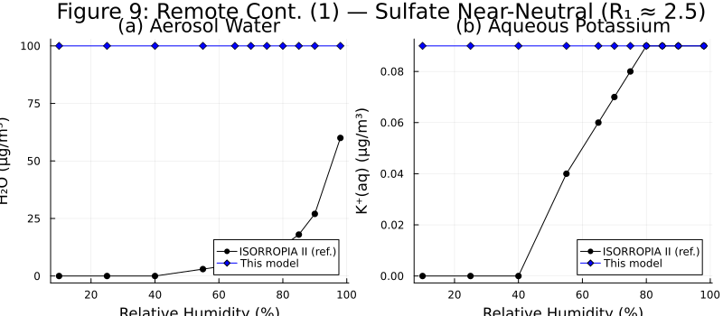

ISORROPIA II
Overview
ISORROPIA II is a computationally efficient thermodynamic equilibrium model for K⁺–Ca²⁺–Mg²⁺–NH₄⁺–Na⁺–SO₄²⁻–NO₃⁻–Cl⁻–H₂O aerosol systems. The model calculates the equilibrium partitioning between gas, liquid, and solid phases for multicomponent inorganic aerosols under given temperature, relative humidity, and total species concentrations.
Reference: Fountoukis, C. and Nenes, A., 2007. ISORROPIA II: a computationally efficient thermodynamic equilibrium model for K⁺–Ca²⁺–Mg²⁺–NH₄⁺–Na⁺–SO₄²⁻–NO₃⁻–Cl⁻–H₂O aerosols. Atmospheric Chemistry and Physics, 7(17), pp.4639-4659. https://doi.org/10.5194/acp-7-4639-2007
See the Isorropia API documentation for constructor details.
Implementation
The ISORROPIA II model is implemented using ModelingToolkit.jl and includes:
- Thermodynamic equilibrium constants for 27 chemical reactions (Table 2 of reference paper)
- Activity coefficient calculations using multicomponent Debye-Hückel and Kusik-Meissner formulations
- Aerosol type classification based on sulfate ratio and crustal species content (Section 3.1)
- Phase partitioning between gas, aqueous, and solid phases
- Temperature dependence for all equilibrium constants (Equation 5)
State Variables
using Aerosol, ModelingToolkit, DataFrames, Plots
using OrdinaryDiffEq, NonlinearSolve
using DynamicQuantities, Symbolics
@named sys = Isorropia()
vars = unknowns(sys)
println("Number of state variables: ", length(vars))
# Show a summary of key variable categories
var_names = [string(Symbolics.tosymbol(v, escape = false)) for v in vars]
categories = Dict(
"Species totals" => count(n -> contains(n, ".total"), var_names),
"Gas phase" => count(n -> startswith(n, "g₊"), var_names),
"Aqueous salts" => count(n -> contains(n, ".logm") || contains(n, ".loga"), var_names),
"Type classification" => count(n -> startswith(n, "type") || startswith(n, "R_"), var_names),
"Other" => length(vars) - count(n -> contains(n, ".total") || startswith(n, "g₊") || contains(n, ".logm") || contains(n, ".loga") || startswith(n, "type") || startswith(n, "R_"), var_names),
)
DataFrame(:Category => collect(keys(categories)), :Count => collect(values(categories)))| Row | Category | Count |
|---|---|---|
| String | Int64 | |
| 1 | Aqueous salts | 0 |
| 2 | Gas phase | 9 |
| 3 | Type classification | 8 |
| 4 | Other | 561 |
| 5 | Species totals | 0 |
Analysis
Equilibrium Constants (Table 2)
The equilibrium constants at the reference temperature T₀ = 298.15 K are given in Table 2 of the paper. The following table verifies that the implementation matches the K⁰ values from Table 2.
@named eq = ISORROPIA.EquilibriumConstants()
compiled_eq = mtkcompile(eq)
# K⁰ values from Table 2 of Fountoukis and Nenes (2007)
table2_K0 = [
(:r1, "Ca(NO₃)₂(s) ⇌ Ca²⁺ + 2NO₃⁻", 6.067e5),
(:r2, "CaCl₂(s) ⇌ Ca²⁺ + 2Cl⁻", 7.974e11),
(:r3, "CaSO₄(s) ⇌ Ca²⁺ + SO₄²⁻", 4.319e-5),
(:r4, "K₂SO₄(s) ⇌ 2K⁺ + SO₄²⁻", 1.569e-2),
(:r5, "KHSO₄(s) ⇌ K⁺ + HSO₄⁻", 24.016),
(:r6, "KNO₃(s) ⇌ K⁺ + NO₃⁻", 0.872),
(:r7, "KCl(s) ⇌ K⁺ + Cl⁻", 8.68),
(:r8, "MgSO₄(s) ⇌ Mg²⁺ + SO₄²⁻", 1.079e5),
(:r9, "Mg(NO₃)₂(s) ⇌ Mg²⁺ + 2NO₃⁻", 2.507e15),
(:r10, "MgCl₂(s) ⇌ Mg²⁺ + 2Cl⁻", 9.557e21),
(:r11, "HSO₄⁻ ⇌ H⁺ + SO₄²⁻", 1.015e-2),
(:r12, "NH₃(g) ⇌ NH₃(aq)", 5.764e1),
(:r13, "NH₃(aq) + H₂O ⇌ NH₄⁺ + OH⁻", 1.805e-5),
(:r14, "HNO₃(g) ⇌ H⁺ + NO₃⁻", 2.511e6),
(:r16, "HCl(g) ⇌ H⁺ + Cl⁻", 1.971e6),
(:r18, "H₂O ⇌ H⁺ + OH⁻", 1.01e-14),
(:r19, "Na₂SO₄(s) ⇌ 2Na⁺ + SO₄²⁻", 4.799e-1),
(:r20, "(NH₄)₂SO₄(s) ⇌ 2NH₄⁺ + SO₄²⁻", 1.817e0),
(:r22, "NaNO₃(s) ⇌ Na⁺ + NO₃⁻", 1.197e1),
(:r26, "NH₄HSO₄(s) ⇌ NH₄⁺ + HSO₄⁻", 1.382e2),
]
prob = NonlinearProblem(compiled_eq, [], [compiled_eq.T => 298.15])
sol = solve(prob)
results = DataFrame(
:Reaction => [r[2] for r in table2_K0],
:Paper_K0 => [r[3] for r in table2_K0],
:Computed_K0 => [exp(sol[getproperty(compiled_eq, r[1]).logK_eq]) for r in table2_K0],
)
results.Relative_Error = abs.(results.Computed_K0 .- results.Paper_K0) ./ results.Paper_K0
results| Row | Reaction | Paper_K0 | Computed_K0 | Relative_Error |
|---|---|---|---|---|
| String | Float64 | Float64 | Float64 | |
| 1 | Ca(NO₃)₂(s) ⇌ Ca²⁺ + 2NO₃⁻ | 606700.0 | 606700.0 | 0.0 |
| 2 | CaCl₂(s) ⇌ Ca²⁺ + 2Cl⁻ | 7.974e11 | 7.974e11 | 1.0716e-15 |
| 3 | CaSO₄(s) ⇌ Ca²⁺ + SO₄²⁻ | 4.319e-5 | 4.319e-5 | 4.70683e-16 |
| 4 | K₂SO₄(s) ⇌ 2K⁺ + SO₄²⁻ | 0.01569 | 0.01569 | 4.42249e-16 |
| 5 | KHSO₄(s) ⇌ K⁺ + HSO₄⁻ | 24.016 | 24.016 | 0.0 |
| 6 | KNO₃(s) ⇌ K⁺ + NO₃⁻ | 0.872 | 0.872 | 0.0 |
| 7 | KCl(s) ⇌ K⁺ + Cl⁻ | 8.68 | 8.68 | 0.0 |
| 8 | MgSO₄(s) ⇌ Mg²⁺ + SO₄²⁻ | 107900.0 | 107900.0 | 2.6973e-16 |
| 9 | Mg(NO₃)₂(s) ⇌ Mg²⁺ + 2NO₃⁻ | 2.507e15 | 2.507e15 | 5.98325e-16 |
| 10 | MgCl₂(s) ⇌ Mg²⁺ + 2Cl⁻ | 9.557e21 | 9.557e21 | 1.09718e-15 |
| 11 | HSO₄⁻ ⇌ H⁺ + SO₄²⁻ | 0.01015 | 0.01015 | 1.70909e-16 |
| 12 | NH₃(g) ⇌ NH₃(aq) | 57.64 | 57.64 | 3.69818e-16 |
| 13 | NH₃(aq) + H₂O ⇌ NH₄⁺ + OH⁻ | 1.805e-5 | 1.805e-5 | 5.63124e-16 |
| 14 | HNO₃(g) ⇌ H⁺ + NO₃⁻ | 2.511e6 | 2.511e6 | 1.85449e-16 |
| 15 | HCl(g) ⇌ H⁺ + Cl⁻ | 1.971e6 | 1.971e6 | 3.54385e-16 |
| 16 | H₂O ⇌ H⁺ + OH⁻ | 1.01e-14 | 1.01e-14 | 3.1242e-15 |
| 17 | Na₂SO₄(s) ⇌ 2Na⁺ + SO₄²⁻ | 0.4799 | 0.4799 | 0.0 |
| 18 | (NH₄)₂SO₄(s) ⇌ 2NH₄⁺ + SO₄²⁻ | 1.817 | 1.817 | 0.0 |
| 19 | NaNO₃(s) ⇌ Na⁺ + NO₃⁻ | 11.97 | 11.97 | 1.48401e-16 |
| 20 | NH₄HSO₄(s) ⇌ NH₄⁺ + HSO₄⁻ | 138.2 | 138.2 | 2.05656e-16 |
Temperature Dependence of Equilibrium Constants (Equation 5)
The temperature dependence of each equilibrium constant follows Equation 5 of the paper:
$\ln K(T) = \ln K^0 + H^+ \left(\frac{T_0}{T} - 1\right) + C^+ \left(1 + \ln\frac{T_0}{T} - \frac{T_0}{T}\right)$
The following plot shows how selected equilibrium constants vary with temperature over the atmospherically relevant range.
T_range = 250.0:2.0:320.0
reactions_to_plot = [
(:r11, "HSO₄⁻ dissociation"),
(:r12, "NH₃(g) ⇌ NH₃(aq)"),
(:r14, "HNO₃(g) ⇌ H⁺ + NO₃⁻"),
(:r16, "HCl(g) ⇌ H⁺ + Cl⁻"),
(:r20, "(NH₄)₂SO₄ dissolution"),
]
p = plot(xlabel = "Temperature (K)", ylabel = "ln K",
title = "Temperature Dependence of Equilibrium Constants (Eq. 5)",
legend = :outertopright, size = (800, 400))
for (rname, label) in reactions_to_plot
logK_vals = Float64[]
for T in T_range
prob_T = NonlinearProblem(compiled_eq, [], [compiled_eq.T => T])
sol_T = solve(prob_T)
push!(logK_vals, sol_T[getproperty(compiled_eq, rname).logK_eq])
end
plot!(p, T_range, logK_vals, label = label, linewidth = 2)
end
p
Deliquescence Relative Humidity vs Temperature (Figure 2)
Figure 2 of the paper shows the deliquescence relative humidity (DRH) as a function of temperature for all ISORROPIA salts. The DRH determines the relative humidity above which a solid salt fully dissolves into the aqueous phase. The temperature dependence is given by:
$\text{DRH}(T) = \text{DRH}(T_0) \exp\left[-l_t \left(\frac{1}{T} - \frac{1}{T_0}\right)\right]$
where $l_t = -\frac{18}{1000 R} L_s m_s$ (see text after Equation 22 in the paper).
# DRH data from Table 4 of Fountoukis and Nenes (2007)
# (salt name, DRH at 298.15K, l_t parameter)
salts_drh = [
("NaCl", 0.7528, 25.0),
("Na₂SO₄", 0.93, 80.0),
("NaNO₃", 0.7379, 304.0),
("NaHSO₄", 0.52, -45.0),
("(NH₄)₂SO₄", 0.7997, 80.0),
("NH₄NO₃", 0.6183, 852.0),
("NH₄Cl", 0.771, 239.0),
("NH₄HSO₄", 0.40, 384.0),
("(NH₄)₃H(SO₄)₂", 0.69, 186.0),
("K₂SO₄", 0.9751, 35.6),
("KCl", 0.8426, 158.9),
("MgCl₂", 0.3284, 42.23),
("Mg(NO₃)₂", 0.54, 230.2),
("MgSO₄", 0.8613, -714.5),
("Ca(NO₃)₂", 0.4906, 509.4),
("CaCl₂", 0.283, 551.1),
]
T_range_drh = 250.0:1.0:320.0
T0 = 298.15
p = plot(xlabel = "Temperature (K)", ylabel = "DRH",
title = "DRH vs Temperature (cf. Figure 2)",
legend = :outertopright, size = (900, 500), ylim = (0, 1))
for (name, drh0, lt) in salts_drh
if isnan(lt)
# DRH doesn't vary with temperature
plot!(p, T_range_drh, fill(drh0, length(T_range_drh)), label = name, linewidth = 1.5)
else
drh_vals = [drh0 * exp(-lt * (1/T - 1/T0)) for T in T_range_drh]
plot!(p, T_range_drh, drh_vals, label = name, linewidth = 1.5)
end
end
p
Model Performance Validation
The following analysis runs the full ISORROPIA model and examines its behavior under varying relative humidity conditions. This demonstrates the gas-aerosol partitioning that is the core function of the model.
RH Sensitivity: Aerosol Water Content
As relative humidity increases, aerosol water content increases because more salts deliquesce and take up water. This is a fundamental behavior described in Section 2.3 of the paper.
compiled_sys = mtkcompile(sys)
RH_values = 0.1:0.05:0.95
water_content = Float64[]
gas_NH3 = Float64[]
gas_HNO3 = Float64[]
gas_HCl = Float64[]
for rh in RH_values
prob = ODEProblem(
compiled_sys, [], (0.0, 10.0),
[compiled_sys.RH => rh],
)
sol = solve(prob, Rosenbrock23())
push!(water_content, sol[compiled_sys.aq.W][end])
push!(gas_NH3, sol[compiled_sys.g.NH3.M][end])
push!(gas_HNO3, sol[compiled_sys.g.HNO3.M][end])
push!(gas_HCl, sol[compiled_sys.g.HCl.M][end])
end
p1 = plot(collect(RH_values), water_content .* 1e6,
xlabel = "Relative Humidity", ylabel = "Aerosol Water (μg/m³ × ρ_w)",
title = "Aerosol Water Content vs RH",
linewidth = 2, label = "W", yscale = :log10)
p1
RH Sensitivity: Gas-Phase Concentrations
As RH increases, volatile species (NH₃, HNO₃, HCl) partition more strongly into the aerosol aqueous phase, reducing their gas-phase concentrations.
p2 = plot(xlabel = "Relative Humidity", ylabel = "Gas Concentration (mol/m³)",
title = "Gas-Phase Concentrations vs RH",
legend = :topright, size = (700, 400))
plot!(p2, collect(RH_values), gas_NH3, label = "NH₃(g)", linewidth = 2)
plot!(p2, collect(RH_values), gas_HNO3, label = "HNO₃(g)", linewidth = 2)
plot!(p2, collect(RH_values), gas_HCl, label = "HCl(g)", linewidth = 2)
p2
Mass Conservation
A key property of the model is that total species concentrations are conserved during the equilibrium calculation (enforced by D(total) ~ 0 for all species). The following verifies this.
prob = ODEProblem(
compiled_sys, [], (0.0, 10.0),
[compiled_sys.RH => 0.7],
)
sol = solve(prob, Rosenbrock23())
species = [
("NH₃+NH₄⁺", compiled_sys.NH.total),
("Na⁺", compiled_sys.Na.total),
("Ca²⁺", compiled_sys.Ca.total),
("K⁺", compiled_sys.K.total),
("Mg²⁺", compiled_sys.Mg.total),
("Cl⁻", compiled_sys.Cl.total),
("NO₃⁻", compiled_sys.NO3.total),
("SO₄²⁻", compiled_sys.SO4.total),
]
DataFrame(
:Species => [s[1] for s in species],
:Initial => [sol[s[2]][1] for s in species],
:Final => [sol[s[2]][end] for s in species],
:Relative_Change => [abs(sol[s[2]][end] - sol[s[2]][1]) / max(abs(sol[s[2]][1]), 1e-30) for s in species],
)| Row | Species | Initial | Final | Relative_Change |
|---|---|---|---|---|
| String | Float64 | Float64 | Float64 | |
| 1 | NH₃+NH₄⁺ | 2.0e-7 | 2.0e-7 | 0.0 |
| 2 | Na⁺ | 4.0e-10 | 4.0e-10 | 0.0 |
| 3 | Ca²⁺ | 1.0e-8 | 1.0e-8 | 0.0 |
| 4 | K⁺ | 8.4e-9 | 8.4e-9 | 0.0 |
| 5 | Mg²⁺ | 4.1e-10 | 4.1e-10 | 0.0 |
| 6 | Cl⁻ | 2.7e-10 | 2.7e-10 | 0.0 |
| 7 | NO₃⁻ | 3.2e-8 | 3.2e-8 | 0.0 |
| 8 | SO₄²⁻ | 1.0e-7 | 1.0e-7 | 0.0 |
Figure 6: Sulfate Rich Aerosol — Urban Case (cf. Figure 6)
Figure 6 of Fountoukis and Nenes (2007) shows aerosol composition as a function of relative humidity for the "Urban (1)" case from Table 8 (Case 1). This case represents a sulfate-rich aerosol with R₁ = 2.14, R₂ = 0.18, R₃ = 0.18 (aerosol type 2: 1 ≤ R₁ < 2). Temperature is 298.15 K. The four panels show: (a) aerosol water content, (b) aqueous potassium, (c) aqueous ammonium, and (d) aqueous nitrate. Black lines show approximate reference data digitized from the published ISORROPIA II results; blue lines show the output of our implementation.
# Molar masses (g/mol) for unit conversions
MW_Na = 22.990; MW_H2SO4 = 98.079; MW_NH3 = 17.031
MW_HNO3 = 63.013; MW_HCl = 36.461; MW_Ca = 40.078
MW_K = 39.098; MW_Mg = 24.305; MW_NH4 = 18.04
MW_NO3 = 62.005; MW_NaCl = 58.44
# Case 1 (Urban (1)) from Table 8: convert μg/m³ to mol/m³
eps_conc = 1e-15 # small nonzero value for species with zero input
case1 = Dict(
:NH => 3.4e-6 / MW_NH3,
:Na => max(0.0e-6 / MW_Na, eps_conc),
:Ca => 0.4e-6 / MW_Ca,
:K => 0.33e-6 / MW_K,
:Mg => max(0.0e-6 / MW_Mg, eps_conc),
:Cl => max(0.0e-6 / MW_HCl, eps_conc),
:NO3 => 2.0e-6 / MW_HNO3,
:SO4 => 10.0e-6 / MW_H2SO4,
)
RH_fig = [0.10, 0.25, 0.40, 0.55, 0.65, 0.70, 0.75, 0.80, 0.85, 0.90, 0.98]
h2o_fig6 = Float64[]
k_aq_fig6 = Float64[]
nh4_aq_fig6 = Float64[]
no3_aq_fig6 = Float64[]
for rh in RH_fig
local prob_fig6, sol_fig6
prob_fig6 = ODEProblem(
compiled_sys,
[
compiled_sys.NH.total => case1[:NH],
compiled_sys.Na.total => case1[:Na],
compiled_sys.Ca.total => case1[:Ca],
compiled_sys.K.total => case1[:K],
compiled_sys.Mg.total => case1[:Mg],
compiled_sys.Cl.total => case1[:Cl],
compiled_sys.NO3.total => case1[:NO3],
compiled_sys.SO4.total => case1[:SO4],
],
(0.0, 10.0),
[compiled_sys.RH => rh, compiled_sys.T => 298.15],
)
sol_fig6 = solve(prob_fig6, Rosenbrock23())
push!(h2o_fig6, sol_fig6[compiled_sys.aq.W][end] * 1e9) # kg/m³ → μg/m³
push!(k_aq_fig6, max(0.0, sol_fig6[compiled_sys.K.total][end] - sol_fig6[compiled_sys.K.precip][end]) * MW_K * 1e6)
push!(nh4_aq_fig6, max(0.0, sol_fig6[compiled_sys.NH.total][end] - sol_fig6[compiled_sys.g.NH3.M][end] - sol_fig6[compiled_sys.NH.precip][end]) * MW_NH4 * 1e6)
push!(no3_aq_fig6, max(0.0, sol_fig6[compiled_sys.NO3.total][end] - sol_fig6[compiled_sys.g.HNO3.M][end] - sol_fig6[compiled_sys.NO3.precip][end]) * MW_NO3 * 1e6)
end
# Approximate ISORROPIA II reference data (digitized from Figure 6, Fountoukis and Nenes, 2007)
ref_rh = [10, 25, 40, 55, 65, 70, 75, 80, 85, 90, 98]
ref_h2o = [0.0, 0.0, 4.0, 6.0, 7.5, 9.0, 11.0, 14.0, 19.0, 27.0, 45.0]
ref_k = [0.0, 0.0, 0.0, 0.0, 0.04, 0.12, 0.22, 0.29, 0.33, 0.33, 0.33]
ref_nh4 = [0.0, 0.0, 1.5, 1.5, 1.6, 2.6, 2.7, 2.7, 2.7, 2.7, 2.7]
ref_no3 = [0.0, 0.0, 0.02, 0.05, 0.08, 0.10, 0.12, 0.14, 0.16, 0.18, 0.20]
p1 = plot(ref_rh, ref_h2o, marker = :circle, color = :black, label = "ISORROPIA II (ref.)",
xlabel = "Relative Humidity (%)", ylabel = "H₂O (μg/m³)", title = "(a) Aerosol Water")
plot!(p1, RH_fig .* 100, h2o_fig6, marker = :diamond, color = :blue, label = "This model")
p2 = plot(ref_rh, ref_k, marker = :circle, color = :black, label = "ISORROPIA II (ref.)",
xlabel = "Relative Humidity (%)", ylabel = "K⁺(aq) (μg/m³)", title = "(b) Aqueous Potassium")
plot!(p2, RH_fig .* 100, k_aq_fig6, marker = :diamond, color = :blue, label = "This model")
p3 = plot(ref_rh, ref_nh4, marker = :circle, color = :black, label = "ISORROPIA II (ref.)",
xlabel = "Relative Humidity (%)", ylabel = "NH₄⁺(aq) (μg/m³)", title = "(c) Aqueous Ammonium")
plot!(p3, RH_fig .* 100, nh4_aq_fig6, marker = :diamond, color = :blue, label = "This model")
p4 = plot(ref_rh, ref_no3, marker = :circle, color = :black, label = "ISORROPIA II (ref.)",
xlabel = "Relative Humidity (%)", ylabel = "NO₃⁻(aq) (μg/m³)", title = "(d) Aqueous Nitrate")
plot!(p4, RH_fig .* 100, no3_aq_fig6, marker = :diamond, color = :blue, label = "This model")
plot(p1, p2, p3, p4, layout = (2, 2), size = (900, 600),
plot_title = "Figure 6: Urban (1) — Sulfate Rich (1 < R₁ < 2)")
Figure 7: Sulfate Poor Marine Aerosol (cf. Figure 7)
Figure 7 of Fountoukis and Nenes (2007) shows aerosol composition for the "Marine (4)" case from Table 8 (Case 12). This case represents a sulfate-poor, crustal- and sodium-rich aerosol with R₁ = 5.14, R₂ = 5.10, R₃ = 0.84 (aerosol type 4: R₁ ≥ 2, R₂ ≥ 2, R₃ < 2). Temperature is 298.15 K. The four panels show: (a) aerosol water content, (b) aqueous potassium, (c) precipitated sodium (as NaCl equivalent), and (d) aqueous magnesium. Black lines show approximate reference data digitized from the published ISORROPIA II results; blue lines show our implementation.
# Case 12 (Marine (4)) from Table 8: convert μg/m³ to mol/m³
case12 = Dict(
:NH => 0.02e-6 / MW_NH3,
:Na => 3.0e-6 / MW_Na,
:Ca => 0.36e-6 / MW_Ca,
:K => 0.45e-6 / MW_K,
:Mg => 0.13e-6 / MW_Mg,
:Cl => 3.121e-6 / MW_HCl,
:NO3 => 2.0e-6 / MW_HNO3,
:SO4 => 3.0e-6 / MW_H2SO4,
)
h2o_fig7 = Float64[]
k_aq_fig7 = Float64[]
na_precip_fig7 = Float64[]
mg_aq_fig7 = Float64[]
for rh in RH_fig
local prob_fig7, sol_fig7
prob_fig7 = ODEProblem(
compiled_sys,
[
compiled_sys.NH.total => case12[:NH],
compiled_sys.Na.total => case12[:Na],
compiled_sys.Ca.total => case12[:Ca],
compiled_sys.K.total => case12[:K],
compiled_sys.Mg.total => case12[:Mg],
compiled_sys.Cl.total => case12[:Cl],
compiled_sys.NO3.total => case12[:NO3],
compiled_sys.SO4.total => case12[:SO4],
],
(0.0, 10.0),
[compiled_sys.RH => rh, compiled_sys.T => 298.15],
)
sol_fig7 = solve(prob_fig7, Rosenbrock23())
push!(h2o_fig7, sol_fig7[compiled_sys.aq.W][end] * 1e9) # kg/m³ → μg/m³
push!(k_aq_fig7, max(0.0, sol_fig7[compiled_sys.K.total][end] - sol_fig7[compiled_sys.K.precip][end]) * MW_K * 1e6)
push!(na_precip_fig7, max(0.0, sol_fig7[compiled_sys.Na.precip][end]) * MW_NaCl * 1e6) # NaCl equivalent
push!(mg_aq_fig7, max(0.0, sol_fig7[compiled_sys.Mg.total][end] - sol_fig7[compiled_sys.Mg.precip][end]) * MW_Mg * 1e6)
end
# Approximate ISORROPIA II reference data (digitized from Figure 7, Fountoukis and Nenes, 2007)
ref7_h2o = [0.0, 2.0, 8.0, 16.0, 25.0, 35.0, 50.0, 80.0, 115.0, 165.0, 250.0]
ref7_k = [0.0, 0.05, 0.18, 0.32, 0.38, 0.41, 0.43, 0.45, 0.45, 0.45, 0.45]
ref7_nacl = [3.8, 3.8, 3.5, 2.5, 1.5, 0.8, 0.0, 0.0, 0.0, 0.0, 0.0]
ref7_mg = [0.13, 0.13, 0.13, 0.13, 0.13, 0.13, 0.13, 0.13, 0.13, 0.13, 0.13]
p5 = plot(ref_rh, ref7_h2o, marker = :circle, color = :black, label = "ISORROPIA II (ref.)",
xlabel = "Relative Humidity (%)", ylabel = "H₂O (μg/m³)", title = "(a) Aerosol Water")
plot!(p5, RH_fig .* 100, h2o_fig7, marker = :diamond, color = :blue, label = "This model")
p6 = plot(ref_rh, ref7_k, marker = :circle, color = :black, label = "ISORROPIA II (ref.)",
xlabel = "Relative Humidity (%)", ylabel = "K⁺(aq) (μg/m³)", title = "(b) Aqueous Potassium")
plot!(p6, RH_fig .* 100, k_aq_fig7, marker = :diamond, color = :blue, label = "This model")
p7 = plot(ref_rh, ref7_nacl, marker = :circle, color = :black, label = "ISORROPIA II (ref.)",
xlabel = "Relative Humidity (%)", ylabel = "NaCl(s) equiv. (μg/m³)", title = "(c) Precipitated Sodium")
plot!(p7, RH_fig .* 100, na_precip_fig7, marker = :diamond, color = :blue, label = "This model")
p8 = plot(ref_rh, ref7_mg, marker = :circle, color = :black, label = "ISORROPIA II (ref.)",
xlabel = "Relative Humidity (%)", ylabel = "Mg²⁺(aq) (μg/m³)", title = "(d) Aqueous Magnesium")
plot!(p8, RH_fig .* 100, mg_aq_fig7, marker = :diamond, color = :blue, label = "This model")
plot(p5, p6, p7, p8, layout = (2, 2), size = (900, 600),
plot_title = "Figure 7: Marine (4) — Sulfate Poor (R₁ > 2, R₂ > 2)")
Figure 8: Non-urban Continental Aerosol (cf. Figure 8)
Figure 8 of Fountoukis and Nenes (2007) shows aerosol composition for the "Non-urban Continental (1)" case from Table 8 (Case 5). This case represents a sulfate-poor, ammonium-rich aerosol with R₁ = 23.9, R₂ = 0.80, R₃ = 0.37 (aerosol type 3: R₁ ≥ 2, R₂ < 2). Temperature is 298.15 K. The three panels show: (a) aerosol water content, (b) aqueous nitrate, and (c) aqueous ammonium. In the paper, ISORROPIA II slightly underpredicts water, nitrate, and ammonium compared to SCAPE2 because SCAPE2 predicts total deliquescence of sulfates at RH = 40% while ISORROPIA II does so at RH = 70%.
# Case 5 (Non-urban Continental (1)) from Table 8: convert μg/m³ to mol/m³
case5 = Dict(
:NH => 8.0e-6 / MW_NH3,
:Na => 0.2e-6 / MW_Na,
:Ca => 0.12e-6 / MW_Ca,
:K => 0.18e-6 / MW_K,
:Mg => max(0.0e-6 / MW_Mg, eps_conc),
:Cl => 0.2e-6 / MW_HCl,
:NO3 => 12.0e-6 / MW_HNO3,
:SO4 => 2.0e-6 / MW_H2SO4,
)
h2o_fig8 = Float64[]
no3_aq_fig8 = Float64[]
nh4_aq_fig8 = Float64[]
for rh in RH_fig
local prob_fig8, sol_fig8
prob_fig8 = ODEProblem(
compiled_sys,
[
compiled_sys.NH.total => case5[:NH],
compiled_sys.Na.total => case5[:Na],
compiled_sys.Ca.total => case5[:Ca],
compiled_sys.K.total => case5[:K],
compiled_sys.Mg.total => case5[:Mg],
compiled_sys.Cl.total => case5[:Cl],
compiled_sys.NO3.total => case5[:NO3],
compiled_sys.SO4.total => case5[:SO4],
],
(0.0, 10.0),
[compiled_sys.RH => rh, compiled_sys.T => 298.15],
)
sol_fig8 = solve(prob_fig8, Rosenbrock23())
push!(h2o_fig8, sol_fig8[compiled_sys.aq.W][end] * 1e9)
push!(no3_aq_fig8, max(0.0, sol_fig8[compiled_sys.NO3.total][end] - sol_fig8[compiled_sys.g.HNO3.M][end] - sol_fig8[compiled_sys.NO3.precip][end]) * MW_NO3 * 1e6)
push!(nh4_aq_fig8, max(0.0, sol_fig8[compiled_sys.NH.total][end] - sol_fig8[compiled_sys.g.NH3.M][end] - sol_fig8[compiled_sys.NH.precip][end]) * MW_NH4 * 1e6)
end
# Approximate ISORROPIA II reference data (digitized from Figure 8, Fountoukis and Nenes, 2007)
# ISORROPIA II shows delayed deliquescence vs SCAPE2 — sulfate dissolves at RH≈70% rather than 40%
ref8_h2o = [0.0, 0.0, 0.0, 0.0, 0.0, 10.0, 30.0, 55.0, 95.0, 160.0, 450.0]
ref8_no3 = [0.0, 0.0, 0.0, 0.0, 0.0, 2.0, 4.5, 6.5, 8.0, 9.5, 11.5]
ref8_nh4 = [0.0, 0.0, 0.0, 0.0, 0.0, 1.5, 3.0, 4.5, 5.5, 6.0, 6.5]
p9 = plot(ref_rh, ref8_h2o, marker = :circle, color = :black, label = "ISORROPIA II (ref.)",
xlabel = "Relative Humidity (%)", ylabel = "H₂O (μg/m³)", title = "(a) Aerosol Water")
plot!(p9, RH_fig .* 100, h2o_fig8, marker = :diamond, color = :blue, label = "This model")
p10 = plot(ref_rh, ref8_no3, marker = :circle, color = :black, label = "ISORROPIA II (ref.)",
xlabel = "Relative Humidity (%)", ylabel = "NO₃⁻(aq) (μg/m³)", title = "(b) Aqueous Nitrate")
plot!(p10, RH_fig .* 100, no3_aq_fig8, marker = :diamond, color = :blue, label = "This model")
p11 = plot(ref_rh, ref8_nh4, marker = :circle, color = :black, label = "ISORROPIA II (ref.)",
xlabel = "Relative Humidity (%)", ylabel = "NH₄⁺(aq) (μg/m³)", title = "(c) Aqueous Ammonium")
plot!(p11, RH_fig .* 100, nh4_aq_fig8, marker = :diamond, color = :blue, label = "This model")
plot(p9, p10, p11, layout = (1, 3), size = (1100, 350),
plot_title = "Figure 8: Non-urban Cont. (1) — Sulfate Poor, NH₄ Rich (R₁ > 2, R₂ < 2)")
Figure 9: Remote Continental Aerosol (cf. Figure 9)
Figure 9 of Fountoukis and Nenes (2007) shows aerosol composition for the "Remote Continental (1)" case from Table 8 (Case 13). This case represents a sulfate near-neutral aerosol with R₁ = 2.49, R₂ = 0.04, R₃ = 0.04. Temperature is 298.15 K. The two panels show: (a) aerosol water content and (b) aqueous potassium. In the paper, the ISORROPIA II stable solution shows no deliquescence below the MDRH of ~0.46, while the metastable solution (not shown here) predicts water and K⁺ at all RH values.
# Case 13 (Remote Continental (1)) from Table 8: convert μg/m³ to mol/m³
case13 = Dict(
:NH => 4.25e-6 / MW_NH3,
:Na => max(0.0e-6 / MW_Na, eps_conc),
:Ca => 0.08e-6 / MW_Ca,
:K => 0.09e-6 / MW_K,
:Mg => max(0.0e-6 / MW_Mg, eps_conc),
:Cl => max(0.0e-6 / MW_HCl, eps_conc),
:NO3 => 0.145e-6 / MW_HNO3,
:SO4 => 10.0e-6 / MW_H2SO4,
)
h2o_fig9 = Float64[]
k_aq_fig9 = Float64[]
for rh in RH_fig
local prob_fig9, sol_fig9
prob_fig9 = ODEProblem(
compiled_sys,
[
compiled_sys.NH.total => case13[:NH],
compiled_sys.Na.total => case13[:Na],
compiled_sys.Ca.total => case13[:Ca],
compiled_sys.K.total => case13[:K],
compiled_sys.Mg.total => case13[:Mg],
compiled_sys.Cl.total => case13[:Cl],
compiled_sys.NO3.total => case13[:NO3],
compiled_sys.SO4.total => case13[:SO4],
],
(0.0, 10.0),
[compiled_sys.RH => rh, compiled_sys.T => 298.15],
)
sol_fig9 = solve(prob_fig9, Rosenbrock23())
push!(h2o_fig9, sol_fig9[compiled_sys.aq.W][end] * 1e9)
push!(k_aq_fig9, max(0.0, sol_fig9[compiled_sys.K.total][end] - sol_fig9[compiled_sys.K.precip][end]) * MW_K * 1e6)
end
# Approximate ISORROPIA II reference data (digitized from Figure 9, Fountoukis and Nenes, 2007)
# Stable solution: no deliquescence below MDRH ≈ 0.46
ref9_h2o = [0.0, 0.0, 0.0, 3.0, 5.0, 7.0, 9.0, 13.0, 18.0, 27.0, 60.0]
ref9_k = [0.0, 0.0, 0.0, 0.04, 0.06, 0.07, 0.08, 0.09, 0.09, 0.09, 0.09]
p12 = plot(ref_rh, ref9_h2o, marker = :circle, color = :black, label = "ISORROPIA II (ref.)",
xlabel = "Relative Humidity (%)", ylabel = "H₂O (μg/m³)", title = "(a) Aerosol Water")
plot!(p12, RH_fig .* 100, h2o_fig9, marker = :diamond, color = :blue, label = "This model")
p13 = plot(ref_rh, ref9_k, marker = :circle, color = :black, label = "ISORROPIA II (ref.)",
xlabel = "Relative Humidity (%)", ylabel = "K⁺(aq) (μg/m³)", title = "(b) Aqueous Potassium")
plot!(p13, RH_fig .* 100, k_aq_fig9, marker = :diamond, color = :blue, label = "This model")
plot(p12, p13, layout = (1, 2), size = (800, 350),
plot_title = "Figure 9: Remote Cont. (1) — Sulfate Near-Neutral (R₁ ≈ 2.5)")